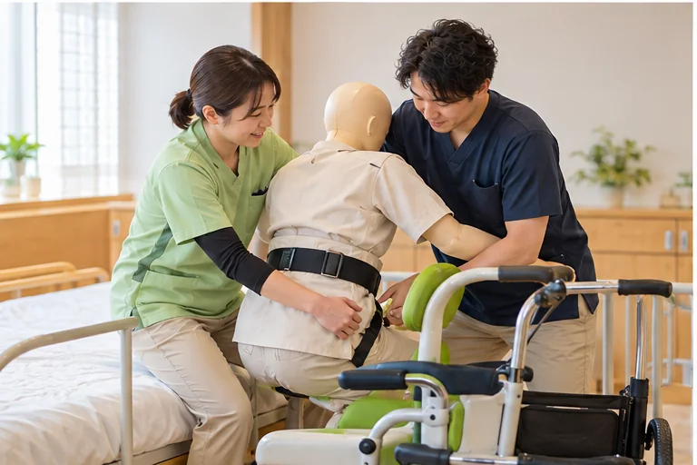

夜勤の負担を、道具で減らす
全居室に見守りセンサー。巡回の回数を減らし、仮眠時間を確保しています。
やすらぎ会では、履歴書なしの施設見学を受け付けています。「人間関係は？」「本当に定時で帰れる？」を、その目で確かめてください。
入職1年後の定着率 88%（2025年度・正職員）／職員 約320名・7施設
※写真はイメージです。残業時間は2025年度の正職員の実績（法人全体の平均）です。
見学後に応募するかどうかは、ゆっくり決めてください。こちらから選考に進めることはありません。
Q1. 夜勤はできますか？
Q2. 興味のある仕事は？
Q3. 介護福祉士の資格は？
やすらぎ会は豊田市内に7つの施設があります。
全居室に見守りセンサー。巡回の回数を減らし、仮眠時間を確保しています。

実務者研修・介護福祉士の受験費用を全額補助。研修日は勤務扱いです。
困ったときに相談できる先輩を、入職時に1人決めます（プリセプター制度）。
※写真はイメージです
| 仕事内容 | 特別養護老人ホームでの食事・入浴・排泄などの介助、レクリエーション、記録 |
|---|---|
| 応募資格 | 介護職員初任者研修以上（未経験の方は「パート」または「無資格可」の枠をご相談ください） |
| 雇用形態 | 正職員（期間の定めなし）／試用期間3か月（条件の変更なし） |
| 給与 | 月給 23.5万〜29万円（基本給 18.2万〜22万円＋処遇改善手当＋資格手当） 夜勤手当 1回 6,000円（上記の月給とは別に支給） 賞与 年2回・計4.0か月分（2025年度実績） |
| 勤務時間 | シフト制（早番 7:00〜16:00／日勤 9:00〜18:00／遅番 11:00〜20:00／夜勤 16:30〜翌9:30）休憩60〜120分 |
| 休日 | 年間休日115日（4週9休）、有給休暇、夏季・年末年始休暇、育児・介護休業 |
| 勤務地 | 愛知県豊田市内の7施設（希望を考慮して決定）／マイカー通勤可・駐車場無料 |
| 保険・制度 | 社会保険完備、退職金制度、資格取得費用の全額補助 |
| 受動喫煙対策 | 敷地内禁煙 |
募集者：社会福祉法人やすらぎ会（架空）。看護師・夜勤専従・パートの募集要項は見学時またはLINEでお渡しします。
見学のとき、職員さんどうしが自然に「ありがとう」と言っていたのを見て、ここなら続けられると思いました。介護職員・入職3年目（インタビューをもとにした架空の表現）
前の職場では夜勤のあとも記録が終わらず残っていました。ここはタブレットで記録できて、定時に帰れています。介護職員・入職2年目（インタビューをもとにした架空の表現）
※個人の感想です。
2025年度の正職員の平均は月3時間です。急変対応などで時間外が生じた場合は、1分単位で記録し、全額支給します。
見学で職場の雰囲気を確かめていただくのがいちばんです。入職後は相談役の先輩がつきます。
介護リフトやスライディングシートを導入し、持ち上げない介護に取り組んでいます。
大丈夫です。入職後1か月は先輩と一緒に勤務し、手順を確認しながら進めます。
もちろんです。見学後にこちらから選考に進めることはありません。